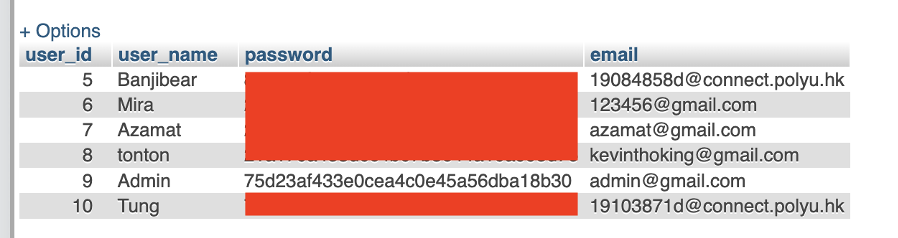

Full Stack Web Development/MySQL Database/Group Project
Travel Fun
About
The group project is a practice of both client and server side programming. At the client side, it is required to provide a nice user interface and JS enabled interactions. On the other hand, at the server side, it requires interactions with the clients, exectution of the application logic, and management of the application database
Timeline
February 2022 − April 2022
Note
The final implementation is deployed on the 000webhost platform. Please do not hesitate to take a look via the link.
Travel Fun
Travel Fun is a world tour website that allows users to share their precious memories and moments while traveling with people from all around the world. On the website, a map of the whole world as the following figure shows. Visitors can drag the map and click on different areas to see photos or posts of that region from other people.
As a platform that aims for sharing, Travel Fun provides two modes, that is, Viewer Mode and User Mode. Users can either log in to an existing account or register for a new account. Travel Fun also allows users to not only upload media, but also follow and interact with different users.
Travel Fun targets people who love to travel around the world and share the joyful moment with others. We aim to make people share and make friends on Travel Fun. It is also an information website for people who are going to travel, for they can check others’ travel tips on this website. In addition, people who wish to manage their travel tips can also use this website as a travelog.
Viewer Mode
The Viewer Mode refers to all users’ access to Travel Fun. To be more specific, it refers to users accessing the website before logging in. Users are able to click on countries and see uploaded posts. Moreover, one can also check out other users’ profile pages.
However, since the mode is for people without logging in, available functions are limited. To start with, when checking out profiles, only limited information is shown. Secondly, the Following and Followers function are provided only for registered users after logging in. Third, one will not be able to create a custom profile with a personal decided bio description. Lastly, you cannot upload posts and media in this mode.
User Mode
All functions are allowed in the User Mode. There will be an unlimited quota for all users to upload their posts and photos. Apart from the aforementioned functionalities, users are able to keep track of not only their posts, photos, but also their followers and followings, all shown on their profile.
System Design and System Structure
With the goals above, the system is designed from four perspectives, including, User Interface, Users and Posts Information, Data Processing, and Data Storage.
It is obvious that, as a website, Travel Fun requires an interface to interact with users. This is when the User Interface enters the picture. The interaction then results in data creation or update requirements. These need to be coped by a separate and specific unit. The unit should not only process these data but be able to retrieve and pass them when users require. Furthermore, being a sharing platform also indicates that Travel Fun must be able to store information. We have then decided to create a storage part of the system.
In terms of User Interface, Information display, as well as User Interaction with the system, these refers to the design of the frontend. On the other hand, the backend design refers to all Interactions between users, Users and Posts creation, Processing, and Storage. This design is considered to be analyzed from an interaction and information flow aspect. Thus, the structure can be divided into three main parts, Frontend, Backend, and the Database.
Frontend
The frontend handels information input, from both users and processing results of the backend, as well as information transfer, display, and detection. It is considered to serve as a constantly-listening listener and will be triggered whenever an event occurs.
The Frontend interacts with the Backend by calling the Backend and passing or fetching information through a connection approach. It only calls the Backend when a specific event happens. The events includes, account login, register, posts fetch, posts creation, follows, and followings. Simple page and button navigation does not require Backend stepping in.
Backend
The Backend accounts for data processing, receiving requests from the Frontend, passing results to the Frontend, and connection to the server (Database). Connection to the server (Database) is the prior majority to all other functions. That is, the basis of the availability of the website/system. Due to the fact that posts are displayed on almost all pages, except for the About page, which is the brief introduction page to Travel Fun, Backend is called almost every time to maintain an up-to-date information display user interface.
Database
The Database is the part storing all data. As mentioned, connection to the Database is the basis of running the system without error, this also implies that, without the database, Travel Fun will have nothing to display but the map on the Home page.
System Components and Functionalities
In order to elaborate the components of the system as well as their functionalities, the components will be listed out and analyzed in depth one by one based on the functions of each component.
Information Unit
Information unit is a component that directly interacts with users. This is where the system displays information and receives users’ requests. The information unit rests on all other units in all pages. Besides displaying information and listening for inputs, the unit is also responsible for detecting whether the user has logged in by calling the Connection Unit and the Login Unit. If users have logged in, the unit sets the Session Name as the username and further changes all the content being displayed, according to the data stored in the Database. The changes of the content will be done by passing user information, which is the Session Name, from the unit to all other units.
Connection Unit
The Connection Unit is responsible for connecting the Backend with the Database, as pointed out, to maintain up-to-date information on the user interface. This unit is called and processed every time before execution of all other functions. It is known that data is the most critical asset in the system, thus, it is also important to make sure the system can access all data. Upon successful connection, data or information will continue to be processed in the rest of the units.
Although the web page can run smoothly, after all, this is the basis of all functions, however, in order to avoid the occurrence of unexpected situations, when the connection unit cannot be successfully processed, the error unit or error message will be triggered.
Login/Log out Unit
As indicated by the name, the unit handles user login and log out events. Yet, the unit can be much more complicated. It interacts mainly with both the Information Unit and the Connection Unit. It is triggered when a user requests to log in or out via the Information Unit. On the other hand, it will trigger the Connection Unit for further processing.
After connection, the unit keeps on processing before directly allowing users to log in. Based on the information entered by the user, the unit compares the data with corresponding one stored in the database. The request is approved only if it satisfy two conditions, that is,
- The account is a valid account existing in the Database
- The input data matches the corresponding record
As for the Log out part, comparisons are not required. The unit simply tells the Information Unit to update the display information.
Registration Unit
Similar to the Login/Logout Unit, the unit also interacts with the Information Unit and the Connection Unit. The main differences are that, except for approving the request by comparing and finding identical records, the Registration Unit processes in an opposite way. It rejects registration if there is an identical record in the Database.
While registering, multiple information is required, including, username, email, password, and confirmation of password. The conditions of successful registration are,
- First, un-matched username, un-matched email, and password
- Second, password should match with the confirmation password
This results in the establishment of a new user profile and record in the Database. Yet, before creating the account, the unit also encrypts the password. The aim is to make the system secure not only against attackers but also engineers maintaining the system (us). Finally, the unit stores the data and returns to the Profile Unit.
Profile Unit
Hosting a personal profile is also one of the major functions Travel Fun provides to all users. Functionalities regarding Profile display and Profile update are handled by the Profile Unit. The unit processes according to the two modes mentioned.

Follow Unit
The Follow Unit is only accessible after logging in the system. Note that the Follow Unit is a bidirectional process.
In terms of the user being followed:
When a user follows other people, the Profile, Post, Followers, and Data in the Database of the individual being followed will also be updated at the same time. That is, the unit calls the Post Unit, the Profile Unit, the Connection Unit, and the Information Unit.
As for users following other account:
All mentioned units in above will be updated as well. If any error occurs in the update process, the Error Unit will be triggered and throw error messages.

Post Unit
The functionalities of the Post Unit are related to all processing regarding posts. Similar to the Profile Unit, the Post Unit also processes according to the two modes mentioned. However, there are not many differences between them.
The Post Unit is able to detect two things, the first thing is about the country you clicked on. The second thing is about
the time the post is created or uploaded.
For the former, Post Unit passes different country names to the Information Unit in order to display the right name in the header. On the other hand, for the latter, posts are ordered by the creation time in a descending manner on each country page.All posts can be viewed from the Home page by clicking on different countries no matter in Viewer Mode or User mode. The main differences are that the Post Unit can be triggered by the Profile Unit (Show own posts), the Follow Unit (Show following users’ posts), and the Post Creation Unit (Show own post on different country pages), only after logging in.
Post Creation Unit
After login to the Travel Fun, the user can share their own post to the server. They can choose a photo of their journey and add some text of what they want to share. They can tag the country of the post so that the post can be uploaded to the respective country page.
Development Team